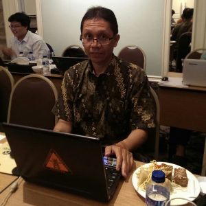
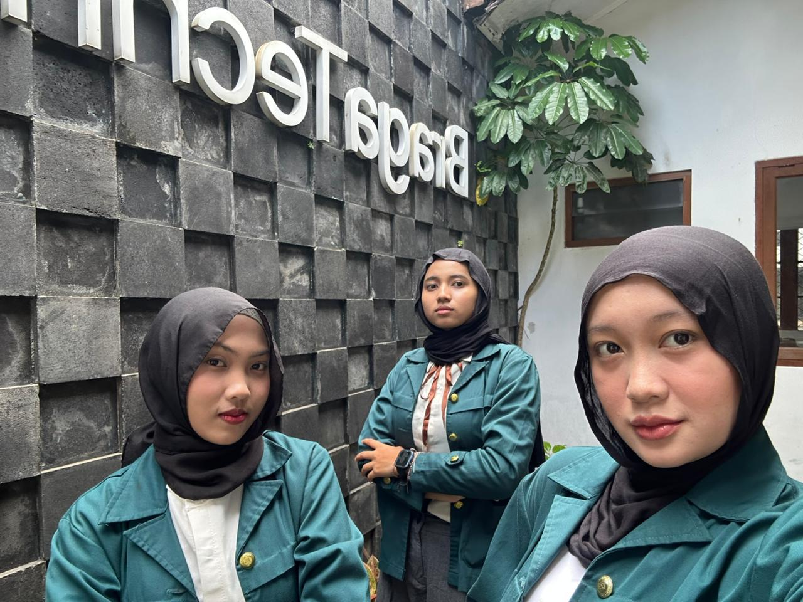
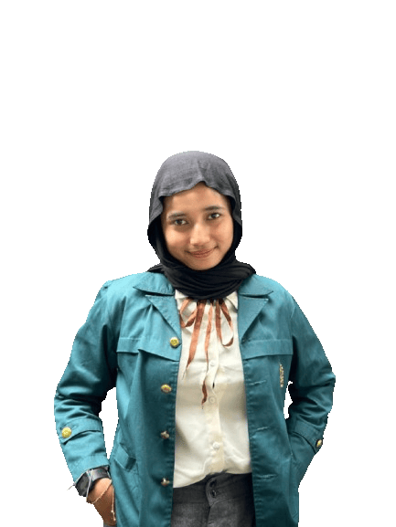

Tentang
Informasi aplikasi, tim, dan kontak.
JejakTapTeng merupakan aplikasi WebGIS berbasis peta interaktif yang dirancang untuk memantau dan menganalisis perubahan tutupan lahan serta kejadian bencana di wilayah Kabupaten Tapanuli Tengah. Aplikasi ini menyajikan informasi geospasial secara visual dan terstruktur, sehingga pengguna dapat mengidentifikasi pola perubahan lahan dari waktu ke waktu serta memahami kondisi lingkungan yang berpotensi meningkatkan risiko bencana. Dengan mengintegrasikan data tutupan lahan, batas administrasi, dan informasi kebencanaan, JejakTapTeng berfungsi sebagai sarana pendukung analisis lingkungan dan mitigasi bencana. Aplikasi ini diharapkan dapat membantu pemangku kepentingan dalam perencanaan wilayah, pengelolaan sumber daya alam, serta pengambilan keputusan yang lebih tepat dan berbasis data.

Institut Teknologi Bandung (ITB) merupakan perguruan tinggi terkemuka di Indonesia yang berperan penting dalam pengembangan ilmu pengetahuan, teknologi, dan inovasi. Melalui pendidikan, penelitian, dan pengabdian kepada masyarakat, ITB secara konsisten mendorong lahirnya sumber daya manusia yang unggul, berintegritas, dan berdaya saing global. Dukungan akademik dan keilmuan dari ITB menjadi landasan kuat dalam pengembangan sistem informasi berbasis geospasial serta pengambilan keputusan yang tepat dan berbasis data.
Dr. Ir. Agung Budi Harto, M.Sc. merupakan dosen di Program Studi Teknik Geodesi dan Geomatika, Institut Teknologi Bandung. Beliau berperan sebagai dosen pembimbing yang memberikan arahan akademik, bimbingan metodologis, serta masukan keilmuan dalam pelaksanaan dan pengembangan proyek ini. Pendampingan yang diberikan turut memastikan kualitas analisis dan penerapan metode geospasial yang sesuai dengan kaidah ilmiah.

Braga Teknologi Nusantara merupakan perusahaan yang bergerak di bidang teknologi dan solusi digital, dengan fokus pada pengembangan sistem informasi, analisis data, serta pemanfaatan teknologi geospasial untuk mendukung pengambilan keputusan berbasis data. Dalam pelaksanaan projek ini, Braga Teknologi Nusantara berperan dalam memberikan dukungan teknis, arahan implementatif, serta wawasan praktis terkait penerapan teknologi di dunia kerja. Hal ini menjadi jembatan antara pengembangan akademik dan kebutuhan industri, sehingga hasil projek tidak hanya bernilai ilmiah, tetapi juga aplikatif dan relevan terhadap permasalahan nyata.


Scan QR Code untuk mengakses file internship